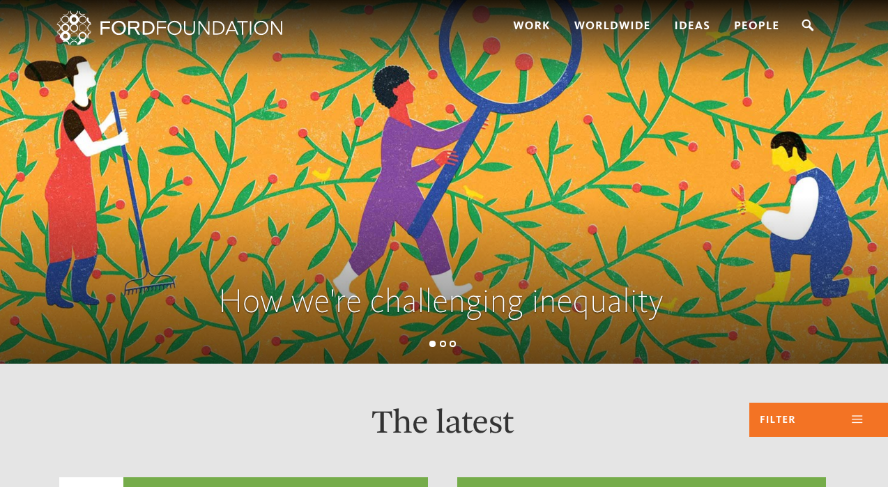
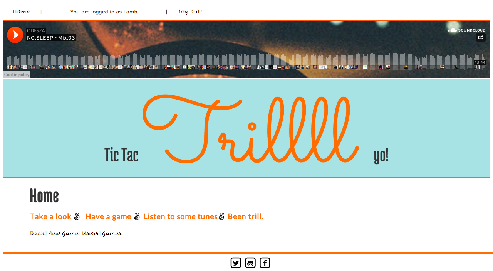
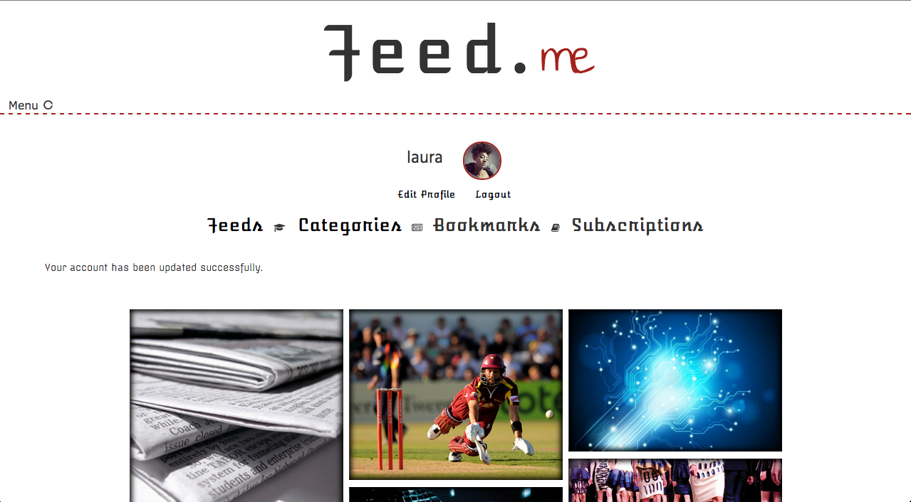
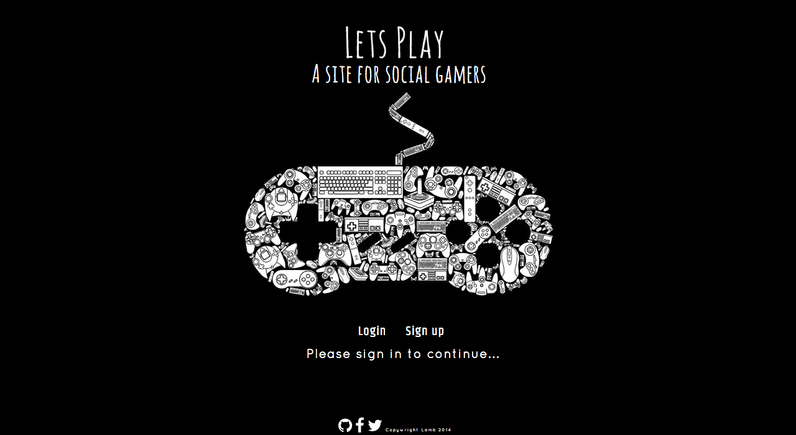

The Ford Foundation
A re-build of the Ford Foundation custom responsive main site. I worked on front end engineering on the site which was built in Umbraco. As well as the main site sections I also worked heavily on the 'Grants Database' section of the site (work > grants database) which was built in Angular, including the graph visuals using data from the Ford Foundation api, filter, search and sort functionality.

"Tic Tac Trill"
My first project on General Assembly's Web Development Immersive course. This was my first real work with Ruby and Ruby on Rails. We had a week to complete it. The project was my chance to work on using Ruby logic which at the time I had chosen because I wanted to challenge myself. This site includes a carrierwave image uploader however Heroku has removed my photos for now.I am going to add AWS to it so you can see it in all its 'Trill' glory soon!
I used Github and Trello for version management and organisation.

"Feed.me"
"Feed.me" was the second project on General Assembly's Web Development Immersive Course. We were tasked with making a site that displayed RSS feeds in pairs
We used Github and Trello for version management and organisation.
I designed all the Front End and we also divided the Back End together.

"Let's Play"
This was my final project on General Assembly's three month Web Development Course. It was open topic. I chose to make a site to organise social gaming sessions with friends and other gamers with a name inspired by my fascination with watching other people play games. We had two weeks to complete it, and I had a really ambitious project with a large number of tables and interactions. This project was written in Ruby on Rails with AngularJs, which we had only studied for a week, and a Rails Engine, which we had never used before at all, so there are some issues I am still ironing out. It is still a great learning experience that I am working on.
